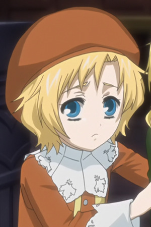

Yuko Sasamoto is a Japanese voice actress.
- Gender: Female
- Birthday: January 30, 1973
- Hometown: Chiba, Japan

|
|---|
| |
Yuko Sasamoto is a Japanese voice actress.
|
|---|
|  | Richard |
|
Richard is the younger of Edward Plantagenet. He loves his brother and looks to him for protection. He has an habit of carrying a skull and talking to it. |
Go Back to Main Page |
Go Back to Homepage |
|
|
|
OR |
|